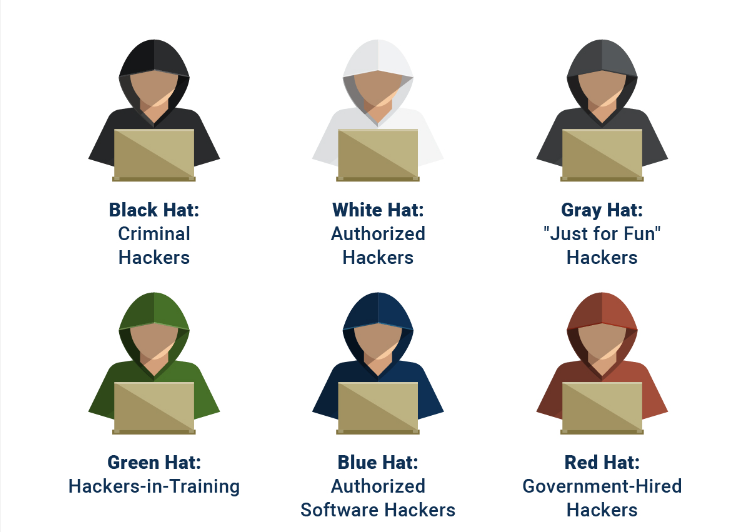

Introduction
Every computer system has its vulnerabilities—hackers demonstrate this every day. But who can defend against them? Surprisingly, the answer is hackers themselves.
“Ethical hacking” may sound paradoxical, but when carried out to identify and remedy system weaknesses, it's not only legal but essential.
Want to become an ethical hacker and contribute to this digital immune system? This guide will explore what ethical hacking is, the necessary skills and education, the job market, and safe, legal ways to practice hacking. We'll also delve into ethical hacking competitions, where participants can win significant rewards—one 2022 event offered more than $1 million in prize money.
Interested in learning more about ethical hacking?
What Is an Ethical Hacker?
Hackers identify and exploit gaps and weaknesses in computer systems. Ethical hackers identify the same weaknesses, but do so with the intention of fixing them. The roles of malicious hacker and ethical hacker require similar skills, traits, and techniques, but their motivations are quite different.
Hackers identify and exploit gaps and weaknesses in computer systems. Ethical hackers identify the same weaknesses, but do so with the intention of fixing them. The roles of malicious hacker and ethical hacker require similar skills, traits, and techniques, but their motivations are quite different.
Malicious hackers make unauthorized attempts to access computer systems or networks. In response, organizations authorize ethical hackers to identify and close those gaps. Basically, organizations pay ethical hackers to help protect their systems and data from malicious hackers.
According to Purplesec, a cyber security company run by U.S. veterans, cybercrime increased globally by 600 percent during the COVID-19 pandemic and could cost $10.5 trillion by 2025. And, in addition to impacting sensitive data, malicious hackers can even cause harm through medical devices. For example, the late hacker Barnaby Jack demonstrated how to hack pacemakers and insulin pumps so that the loophole giving hackers access could be fixed. In this instance, ethical hacking showed a potential to save lives.
Types of Hackers

- Black Hat: These are cybercriminals. Black hat hackers attack vulnerabilities with malicious intent.
- White Hat: Also known as security specialists, white hat hackers look for the same vulnerabilities as black hats but determine how to fix the issues and prevent future attacks. Sometimes, black hats become white hats.
- Gray Hat: Gray hats have mixed motivations. They enjoy hacking and often do so without authorization, but they don’t act maliciously. Grey hats often view hacking as sport.
- Blue Hat: Tech companies hire blue hat hackers to test products and find security issues. Microsoft hosts an annual BlueHat convention.
- Red Hat: Also known as vigilante hackers, red hats act aggressively to stop the black hats and employ some of their strategies. Government agencies hire red hats for their mission focus.
- Green Hat: These are the hacking beginners who want to become white, blue, or red hats (but hopefully not black hats). How do they learn? Let’s take a look.
How to Become an Ethical Hacker
Those with a curious mind, a taste for coding, and a tenacious personality may want to consider ethical hacking. It requires discipline and a sense of ethics—as the name suggests.
From a tech perspective, ethical hackers must understand networks and operating systems, notably Windows and Linux. JavaScript, Python, and SQL are among the leading languages ethical hackers use, but additional languages may be needed depending on the types of systems being accessed and their security posture.
There are several ways to learn ethical hacking. Information security analysts typically hold degrees in computer science or information technology, according to the U.S. Bureau of Labor Statistics (BLS), but that's not the only educational pathway. For instance, 8 percent of penetration testers—an emerging role in cyber security—have a high school diploma or equivalent, according to CareerOneStop. In addition, many have learned through independent study, online courses, or boot camps. Here are some resources to help you get started in ethical hacking:
- Cybersecurity Guide: This site provides a detailed breakdown of ethical hacking including educational paths, roles to pursue, job types, and certifications. It's a good starting point for newcomers.
- edX: The tech catalog of edX's free online educational platform includes the basics of cyber security, an introduction to network security, and several classes on penetration testing.
- Boot Camps: These programs provide in-demand cyber security and ethical hacking skills in as little as 24 weeks. For instance, University of Denver Cybersecurity Boot Camp digs into system administration, network security, and offensive and defensive techniques. Learners apply their newfound knowledge through real-world projects, immersing themselves in the world of ethical hacking.
- Hacking for Dummies: This book introduces novices to key concepts surrounding safeguarding data and ways to otherwise deter cyber criminals.
- Google's Ethical Hacking University: Available at the Google Play store, this free app teaches cyber security and ethical hacking skills. It is intended for people who want to start cyber security careers, as well as businesses that want to start developing a better cyber security posture.
- Bug Hunters: Another Google project, this international community of ethical hackers works to keep Google products safe. Bug hunters who find and report flaws have earned more than $35 million in rewards. The site also features Bug Hunter University.
- Hack This Site: Under the slogan “training the hacker underground,” Hack This Site presents lectures, projects, challenges, and forums to learn about hacking. It even ranks the site's top hackers.
- Hacker101: The internet security company HackerOne built a companion portal for cyber security novices. This site includes video lessons, games, and an informative guide to hacking.
- EC-Council: This cyber security group offers one of the most popular technical certifications: the Certified Ethical Hacker. The program promises to teach the latest tools and techniques to “lawfully hack” an organization.
Where to Find Ethical Hacking Competitions
Hackers develop their skills by hacking. The trouble is, society is generally trying to prevent that, so where can you learn to hack safely and legally? Fortunately, plenty of sites exist for that specific purpose.
It's important to note that you should always use caution when interacting with, or downloading from, sites devoted to hacking. Remember, you're in the hackers' domain and there is always the potential to encounter black hats. That said, here are some of the better-known ethical hacking sites where you can learn and practice responsibly.
- PortSwigger Web Security Academy: The site offers volumes of free web security training labs. PortSwigger also offers suggestions for beginning ethical hacker learning paths.
- Hack The Box: This site, operated by hackers and members of the infosec community, operates what it calls a “massive hacking playground.” Hack the Box features a gamified environment where users learn, devise, and share hacking techniques. It hosts Capture the Flag (CTF) and Battleground games, which run in real-time, multi-player environments.
- PentesterLab: Penetration testing is an important hacking skill. PentesterLab has built one of the largest security platforms, hosting free and paid labs, tutorials, and exercises for hackers of all levels. Check out their free content to begin your practice.
- VulnHub: This open-source community builds vulnerable virtual machines (or VM) to serve as training grounds for aspiring hackers.
- TryHackMe: This free site teaches cyber security through a series of short, gamified labs that simulate real-world situations. The “hacktivities” include an introductory lesson that guides you through your first hack.
- Google Gruyere: Google developers created this web app, named for the cheese, loaded with vulnerabilities for anyone to hack safely.
- Defend the Web: Formerly known as HackThis, Defend the Web is an interactive platform with a challenge playground, a dense article collection, and an active community.
- Juice Shop: The OWASP Foundation (Open Web Application Security Project) opened the Juice Shop to conduct security training and hold Capture the Flag (CTF) games. The site bills itself as “probably the most modern and sophisticated insecure web application.”
- bWAPP: The Buggy Web Application is free, open-source, and deliberately insecure. The application claims to have more than 100 vulnerabilities for aspiring ethical hackers to exploit.
- WebGoat: Another deliberately insecure site, OWASP's WebGoat encourages ethical hackers to test for vulnerabilities common to Java-based apps.